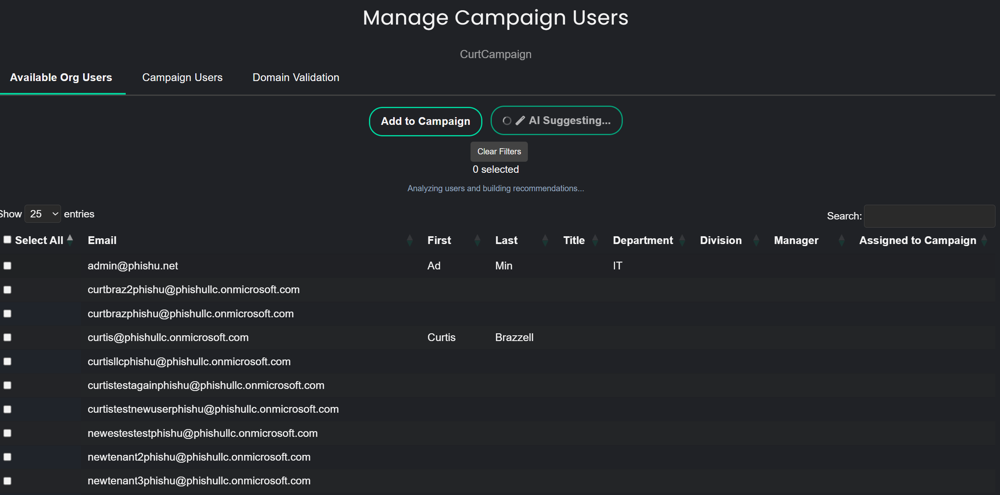
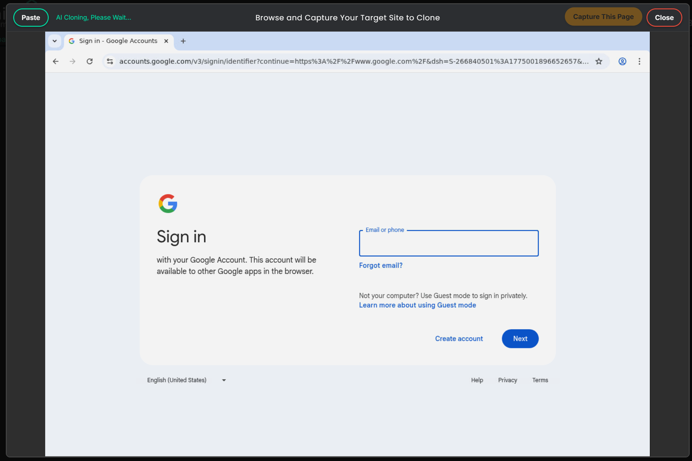
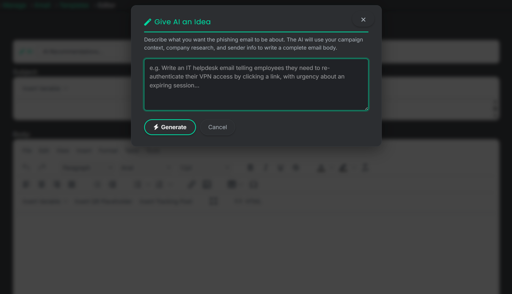
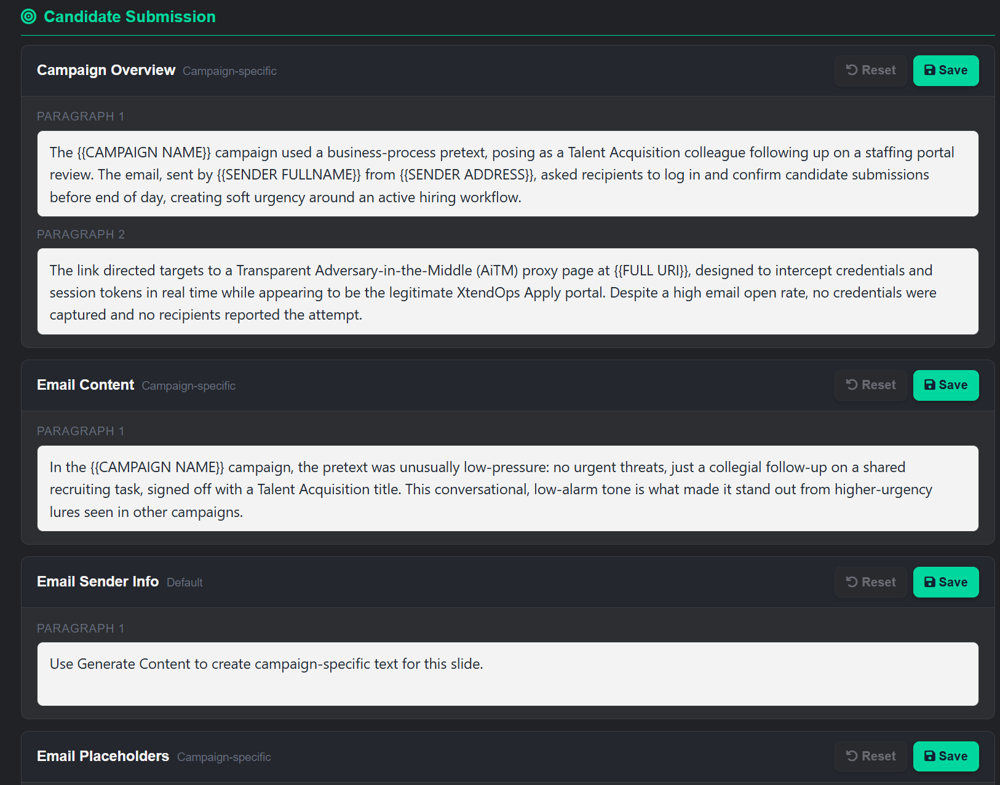
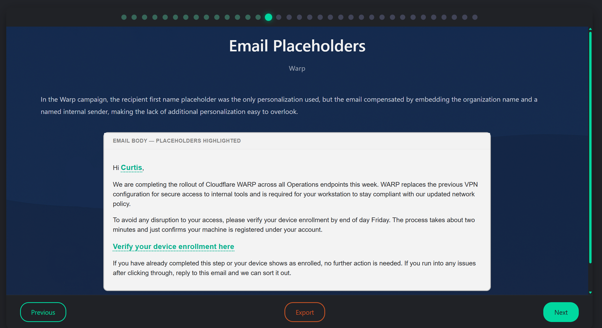

AI in the PhishU Framework is not there as a marketing buzzword. It is there because it is useful. For consulting firms, MSSPs, pentest teams, and internal red teams, it shortens the time required to plan an assessment, choose relevant targets, build realistic campaign assets, and turn the results into a usable report and training outcome.
The important detail is that AI does not replace operator judgment. Most AI-assisted features in the Framework are optional, so teams can use them when they help and ignore them when they do not. Operators can still edit the final scenario, adjust the sender persona, rewrite the landing page, add branding, remove branding, change the lure, and make the final call before anything is sent.

AI Helps at the Beginning, Not Just the End
A realistic phishing campaign starts before anyone writes an email. The PhishU Framework uses AI before the operator ever gets to the landing page or email editor. It can use passive reconnaissance and stored organization context to help suggest the campaign in the first place, including a likely pretext, target audience, impersonation angle, and landing-page nickname.
That matters because much of the time lost in phishing work is in deciding what to build in the first place. If the Framework can shorten that planning step with passive recon and AI-assisted campaign suggestion, the rest of the workflow moves faster too.
AI Can Recommend Which Available Users Actually Fit the Scenario
Once a campaign concept exists, the next question is which users actually fit it. On the Campaign Targets page, the Framework can use AI to recommend relevant targets from the available users based on scenario context and non-personalized attributes such as titles, departments, divisions, manager grouping, notes, and campaign assignment history. The result includes reasoning so the operator can see why those users fit the campaign.

Landing Pages Get Faster to Build Without Becoming Opaque
Landing page work is another place where AI saves time without making the result uncontrollable. The Framework can carry forward an AI-suggested landing-page nickname, and it can help rewrite scraped or captured site content into a usable phishing landing page.
Operators are not locked into whatever the model returns. They can review the output, edit the HTML, swap content, add or remove target branding, change text, and tune the final experience before using it in a live campaign. If they prefer to build the page manually, they can do that too. AI speeds up page creation, while the platform still enforces the technical behavior needed for the page to function correctly inside the Framework.

Email and Calendar Content Can Start From a Better Draft
Email authoring is still one of the most obvious uses for AI, but the value is not just in generating words. The Framework can use the saved campaign suggestion, organization context, landing-page context, and sender information to build a suggested sender profile and a default email template, giving the operator something realistic to refine rather than a blank editor.
From there, AI can generate the actual email body and subject line, or write from a direct prompt if the operator already knows the angle they want. The same pattern applies to calendar invite content. If the scenario works better as a native calendar event than a standard email, AI can help draft the event title, event body, and related details while still leaving the operator free to rewrite the final content. None of that AI authoring is mandatory. Teams can still write their own email and calendar content from scratch.

AI Also Helps Before Sends Go Out
AI in the Framework is not limited to planning and content creation. It can also help the operator understand likely inbox-placement risk before campaign sends go out. That matters because a realistic phishing assessment is not just about writing a believable lure. It is also about understanding whether the current sender setup, message content, and campaign choices are likely to hurt deliverability.
The Framework uses AI-assisted deliverability reasoning to help explain the current state of email risk and what can be improved. That gives operators better guidance before launch, while there is still time to change content, sender details, and other campaign settings.

Operators Still Make the Final Edits
AI is there to help create a good first draft, not to force teams into a one-click campaign they cannot explain or trust. Operators can make their own final edits, change the sender persona, adjust the template, rewrite the landing page, add target branding, strip branding out, update tracked text, and decide what actually becomes the campaign default. That control matters because a generic AI draft is only useful if the operator can shape it into the exact final result they need.
Protecting PII Matters Too
AI workflow acceleration is not useful if it creates a governance problem. The Framework is designed so that AI features can use sanitized, bounded, and often aggregate context instead of blindly sending personal data to third-party AI providers. Titles, departments, and other categorical signals may be used for campaign context, but direct identifiers are stripped or minimized where they are not required.
That means teams can benefit from AI-assisted planning and drafting without turning the platform into a machine that ships names, email addresses, captured credentials, tokens, or other sensitive material out to a model provider unnecessarily.
AI Also Helps After the Campaign Runs
The AI story does not stop once a campaign is launched. The Framework also uses AI after execution to help explain what happened and why it mattered.
Instead of turning raw metrics into a manual report-writing exercise, the Framework can help produce polished report narratives from the campaign evidence already in the system. The report draft is still editable, so operators can review it, make final changes, and decide what actually gets delivered to the client.

The same pattern continues into training. The Framework can generate draft training content tied to campaign outcomes so operators do not have to build every lesson from scratch. Training output is still editable too, which lets the operator refine the lesson, adjust tone, and make final changes before assigning it to recipients.


Why This Matters for Real Operators
For red teams and pentest firms, AI reduces the labor required to go from customer context to believable campaign artifacts. For MSSPs, it improves repeatability and helps scale realistic phishing operations across multiple clients. For internal security teams, it lowers the time cost of building more tailored campaigns and follow-up training instead of falling back on generic awareness content.
The Better AI Story
The best way to think about AI in the Framework is as a workflow layer across the full phishing lifecycle. It helps plan the campaign, recommend who to target, carry the scenario into landing pages and lures, explain inbox-deliverability issues, and generate the post-campaign materials that normally slow teams down.
That combination of speed, operator control, and PII-aware design is what makes the AI story useful. The goal is to help skilled operators move faster without sacrificing realism or control.
Want to see how AI speeds up phishing campaigns without taking control away from your team?
The PhishU Framework uses AI to accelerate planning, targeting, landing-page creation, email and calendar authoring, deliverability analysis, reporting, and training while still letting operators make the final edits and keep sensitive data exposure to a minimum.
Request a Quote